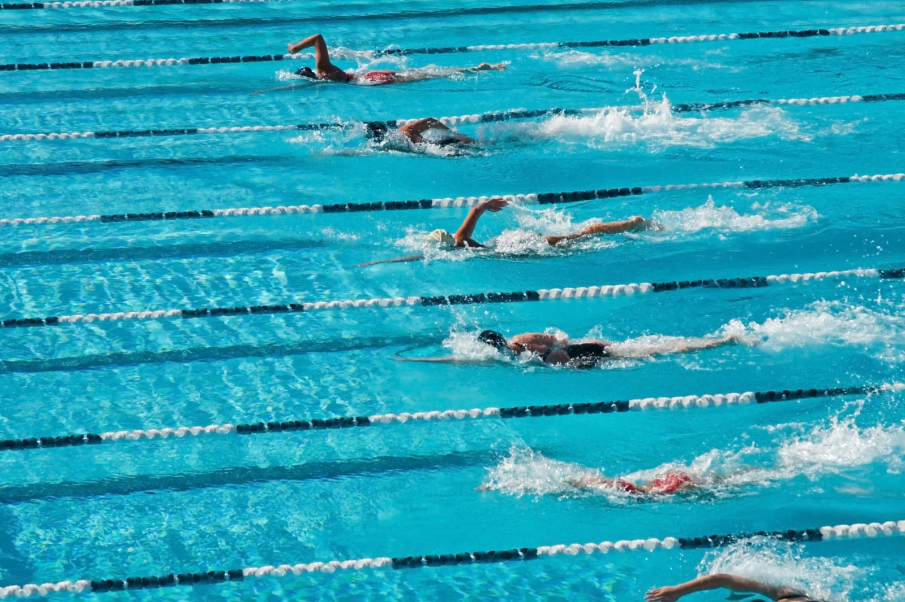

History of Swimming
Swimming dates back to prehistoric times, with references in ancient Egyptian, Greek, and Roman cultures. It became a competitive sport in the 19th century in Europe. The first Olympic swimming competitions were held in 1896 for men and in 1912 for women.
Today, swimming is both a recreational activity and a major international sport.
Swimming Strokes & Rules
- Freestyle – fastest stroke using flutter kick and overarm motion
- Backstroke – swimmer floats on back and uses alternating arm strokes
- Breaststroke – frog-like movement, both arms move together
- Butterfly – both arms move simultaneously with dolphin kick
- Races range from 50m sprints to 1500m endurance events
- Rules governed by FINA (International Swimming Federation)
Major Swimming Competitions
- Olympic Games
- FINA World Aquatics Championships
- European & Asian Swimming Championships
- Commonwealth Games
Famous Swimmers
- Michael Phelps (USA) – most decorated Olympian ever
- Katie Ledecky (USA)
- Caeleb Dressel (USA)
- Ian Thorpe (Australia)
- Kristóf Milák (Hungary)
Health Benefits of Swimming
- Full-body workout with low impact on joints
- Improves cardiovascular health and lung capacity
- Increases strength, flexibility, and endurance
- Reduces stress and improves mental health
- Helps with weight control and muscle tone
Global Popularity
Swimming is universally popular and accessible. From local pools to international competitions, millions enjoy it for sport, survival, and fun. It's a core Olympic sport and a fundamental life skill.